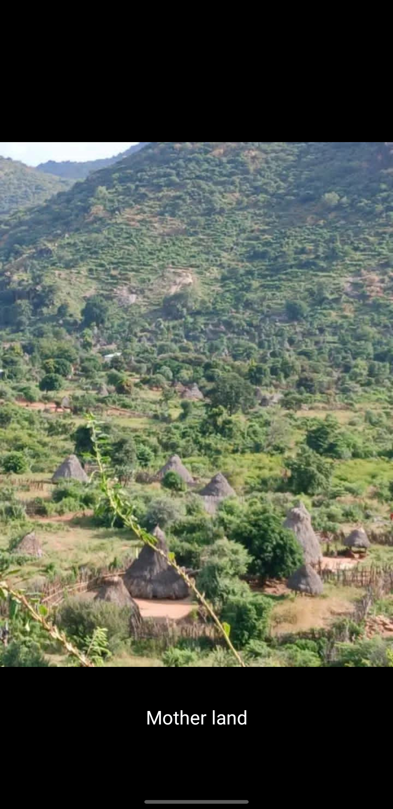
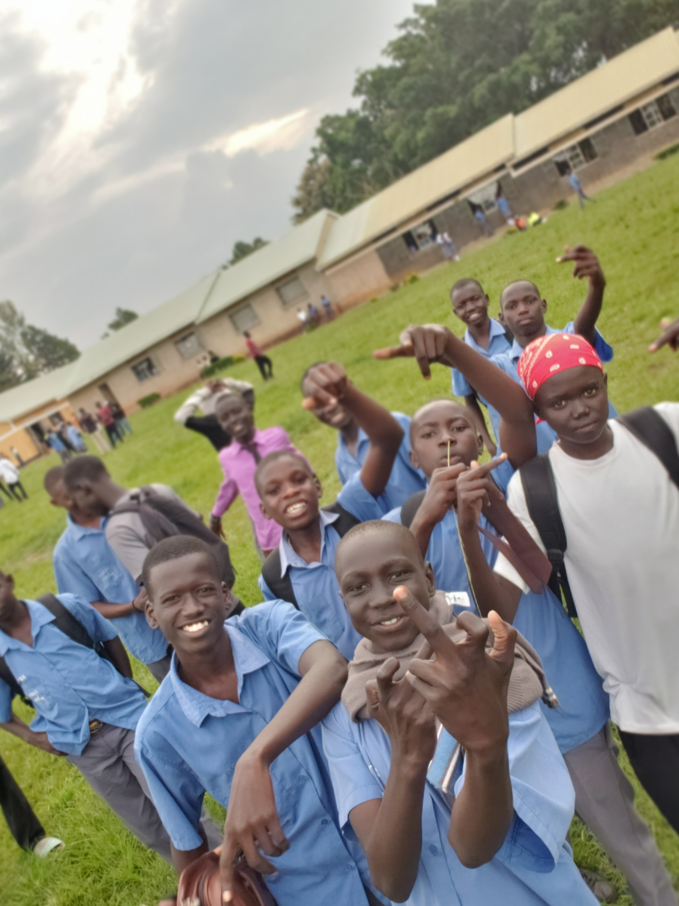
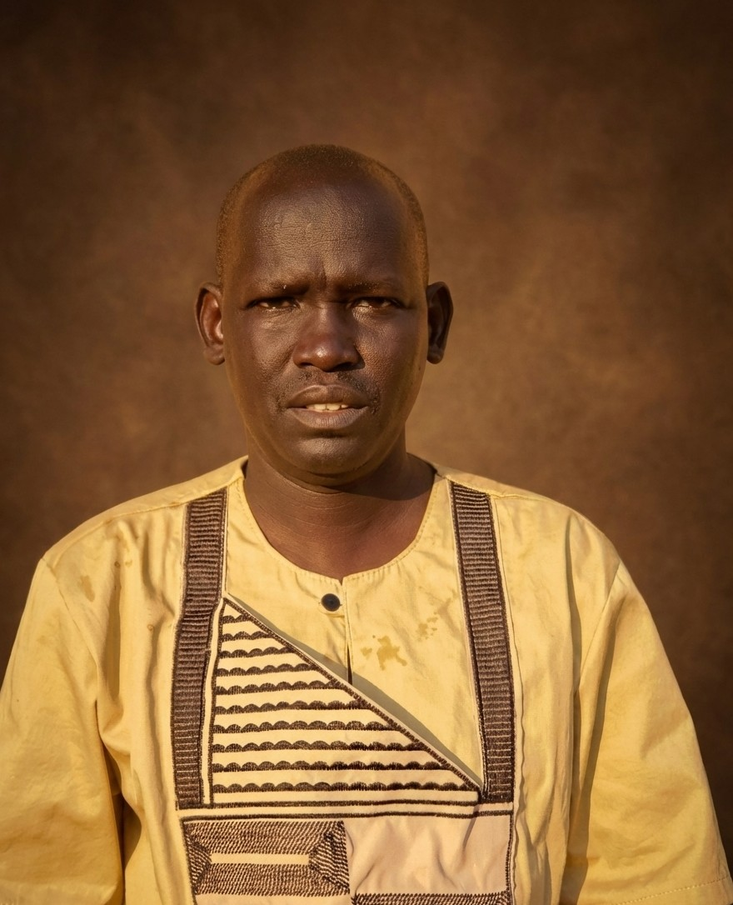
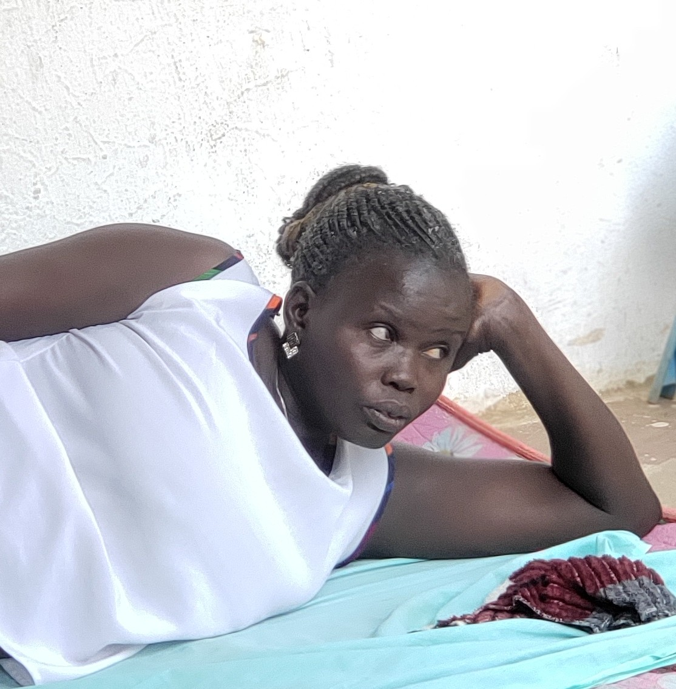
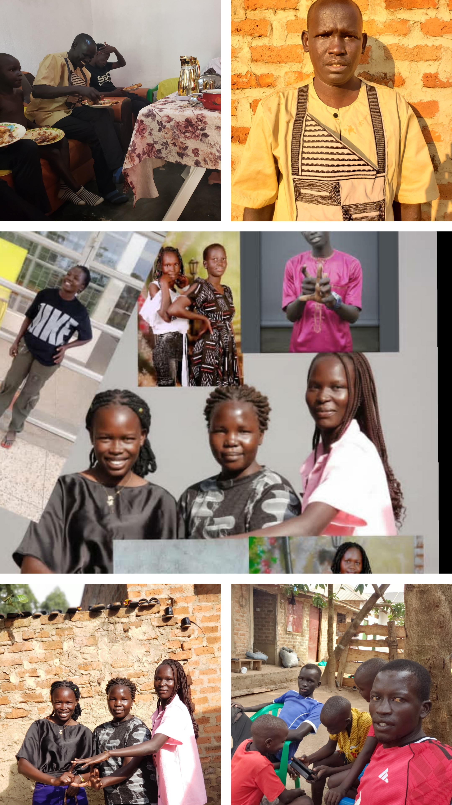
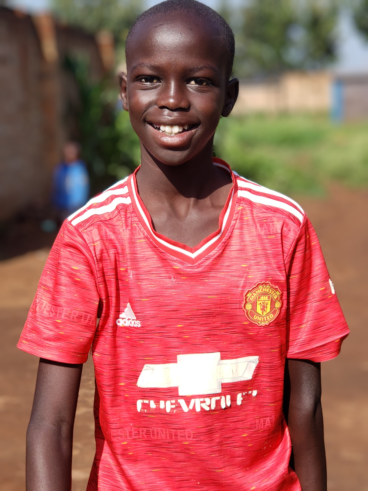
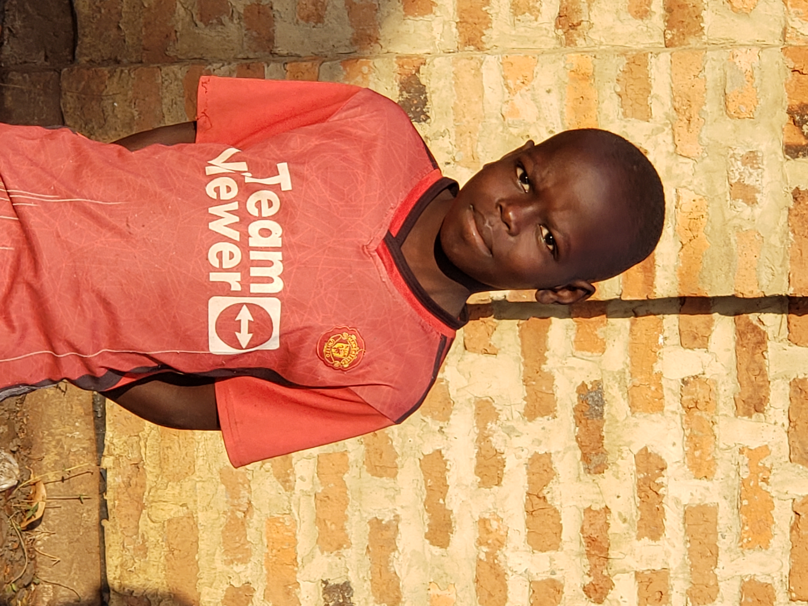
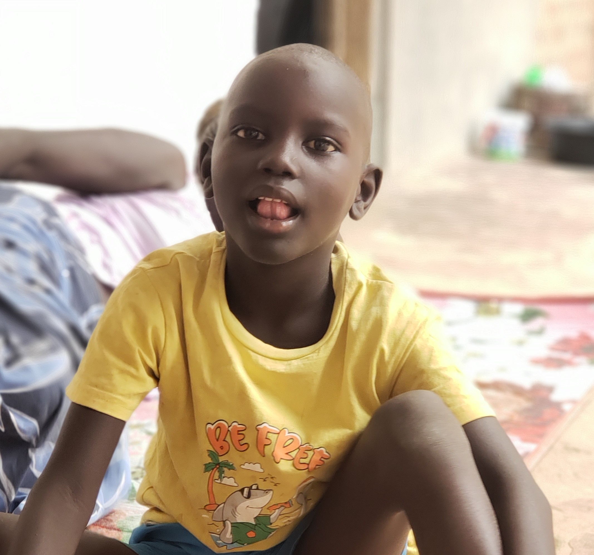
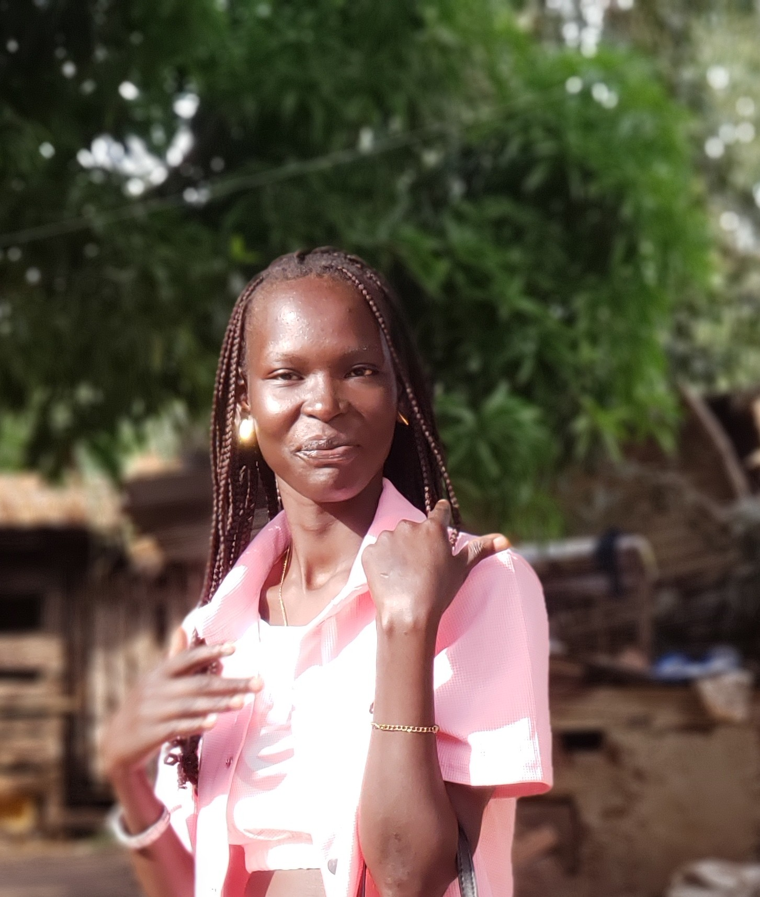

BARAKA EMMANUEL
"South Sudan root — Ugandan soil — global markets. A system engineer forged in displacement and code."
I. ORIGINS · SOUTH SUDAN
Born in Conflict

Baraka Emmanuel was born in South Sudan Torit 01/01/2010, a land defined by resilience, conflict, and raw strength. To be born there is not just geography — it is identity. South Sudan is not a place that creates softness. It creates endurance and hardship.
Early Uncertainty

His early life began in uncertainty — a region where stability is never guaranteed, and where survival teaches awareness before comfort ever does. But destiny moved early.
Ugandan Soil

He grew up in Uganda, primarily in Kampala and Bweyale, where exposure to urban life, markets, and digital expansion reshaped his worldview. Uganda became the soil. South Sudan remained the root. This dual identity built something powerful: Adaptability.
II. THE THOMAS DYNASTY
Baraka was raised in a structured, faith-driven household.

Adda Thomas
Father · Discipline & Endurance

Elizabeth Thomas
Mother · Stability & Guidance

From them he inherited:
Siblings · Seven Pillars






"Growing up in a large family teaches something critical: Competition without hatred. Strength without isolation. Independence inside unity. It builds internal toughness."
III. THE STRUCTURED MIND
Our Lady Primary School
That phase shaped discipline and foundational literacy. The beginning of structured thinking.
Dorah Bloch International School · Bweyale
International curriculum. Structured academics. Broader perspective. While others studied for grades, Baraka studied systems. He was less interested in memorizing answers. More interested in understanding mechanisms.
IV. THE REPLICATION · FROM SURVIVAL TO LEVERAGE
The Replication
From Survival to Leverage. Most people in East Africa think: Get education → Get job → Earn salary → Survive. Baraka's mind rejected linear income early. Time-for-money is capped. Systems-for-money scales.
Discovery of Forex
24-hour liquidity · Decentralized exchange · Mathematical volatility · Algorithmic opportunity. He didn't see candles. He saw data. He didn't see trades. He saw inefficiencies.
The Engineer Emerges
MetaTrader API · Python automation · Signal relays · VPS infrastructure · Execution latency · Restart logic · 24/7 uptime architecture. He stopped being a trader. He started becoming a system engineer.
V. THE OBSESSION PHASE · INSTITUTIONAL THINKING
He didn't want 60% win rate. He wanted:
// The question that changed everything
Most traders ask: "Is this a good entry?"
Baraka asked: "How do I build infrastructure that executes without emotional interference?"
That's not retail psychology. That's operator psychology.
VI. REAL LIFE PRESSURE
Capital Limitations
Behind ambition is reality. Capital limitations · Broker spreads · Slippage · Infrastructure reliability · VPS stability · Execution delays · Market regime shifts.
Asymmetric Terrain
He operates from Uganda into global financial systems dominated by London and New York liquidity. That's asymmetric terrain. Which makes engineering even more critical.
The Identity Now
Baraka Emmanuel is not a signal seller, marketing trader, or chart influencer. He is becoming: A quantitative automation architect · System-level thinker · Digital leverage strategist.
VII. THE EXAGGERATED VISION
If disciplined correctly:
- Building proprietary multi-asset execution frameworks
- Running institutional-grade backtesting clusters
- Designing latency-aware execution bridges
- Creating private liquidity routing logic
- Building a trading infrastructure company originating from East Africa
From South Sudan roots. To Ugandan upbringing. To global markets. That narrative is powerful.
But here is the truth:
Ambition alone is nothing. If he combines:
- Statistical honesty
- Risk compression
- Portfolio mathematics
- Monte Carlo robustness
- Real forward validation
- Execution discipline
"Then his story becomes historic. If not, he remains another ambitious retail builder."